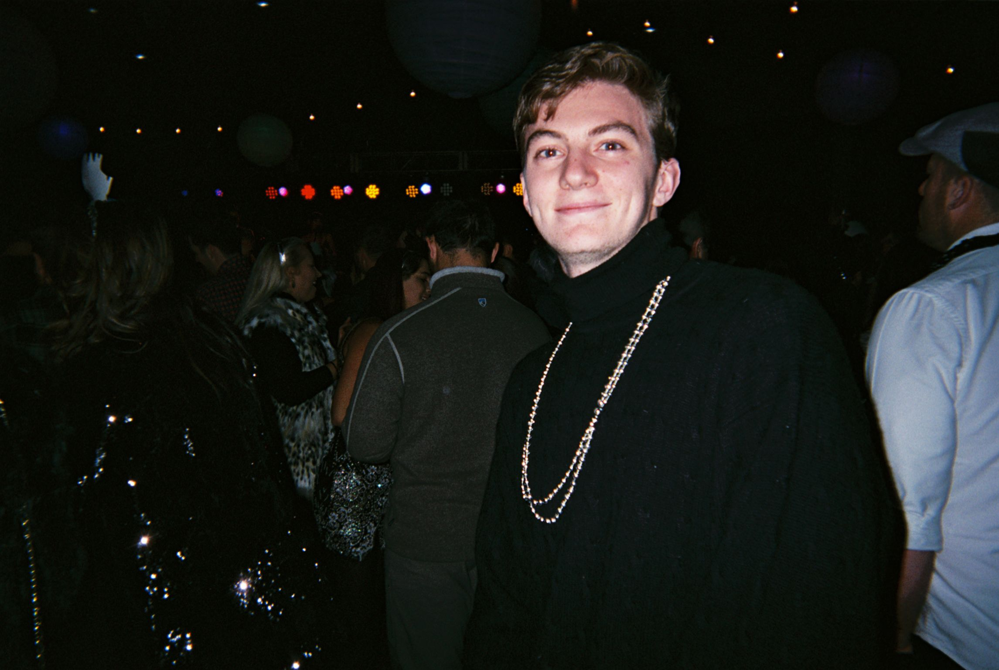
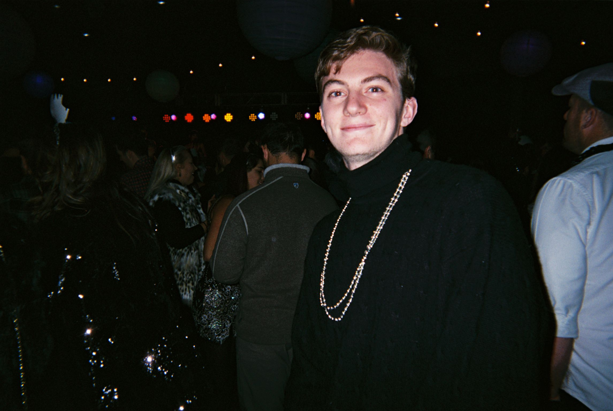

That's me up above, USC Annenberg graduate (Class of 2020). I love documentaries - it's the best way I have to satiate my curiosity, be creative, and tell meaningful stories. I'm a big Adobe Suite user, if I had to rank my top 5 favorites, 1. Premiere 2. Photoshop 3. Illustrator 4. Lightroom 5. After Effects